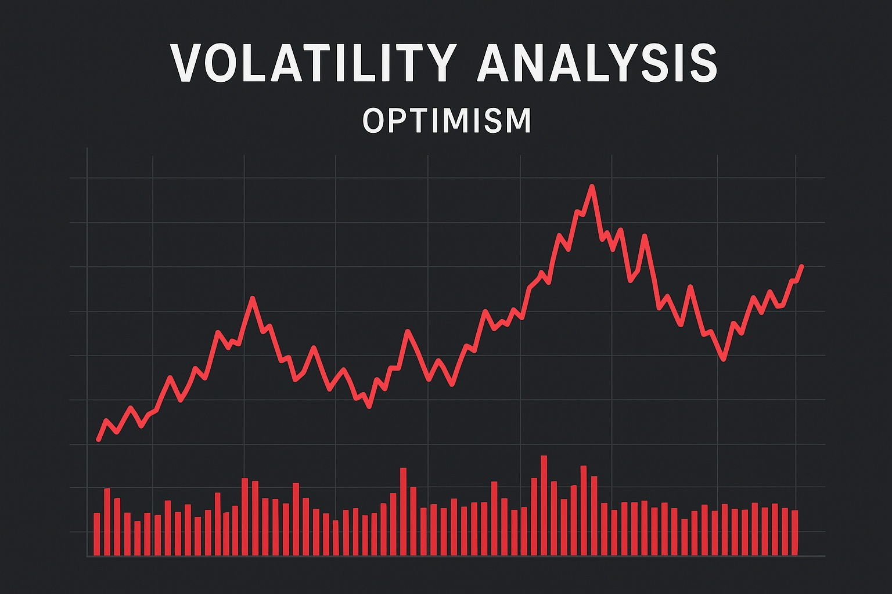

Optimism Price Prediction for End of 2025: In-Depth Analysis and Insights
The information in this article is provided for educational purposes only and is not investment advice. Cryptocurrency investments carry risks.
Introduction
As of August 20, 2025, 01:15 AM EEST, Optimism (OP) is trading at approximately $2.10, solidifying its position as a leading layer-2 scaling solution for Ethereum. Developed by the Optimism Foundation, Optimism enhances Ethereum’s scalability by processing transactions off-chain while maintaining security and decentralization through optimistic rollups. Its role in DeFi, NFTs, and dApps, combined with partnerships with projects like Uniswap and Synthetix, strengthens its ecosystem. This article provides a comprehensive analysis of OP’s price outlook for the end of 2025, exploring bullish and bearish scenarios, key growth drivers, and potential risks based on current market trends and ecosystem developments.

Current Situation
As of August 20, 2025, Optimism’s price is around $2.10, reflecting a 20% increase from June 2025, when OP traded at $1.75. Over the past 30 days, Optimism has shown resilience, with 57% of days closing in the green and a moderate volatility of 5.5%. The Fear and Greed Index at 70 indicates strong investor confidence, driven by Optimism’s growing adoption in DeFi, its integration with Ethereum’s ecosystem, and partnerships with major protocols like Aave and Chainlink. Over the past year, OP’s price has risen from $1.20, achieving a 75% gain. Since its mainnet launch in 2021 at $0.80, OP has grown by 162.5%, fueled by its scalable infrastructure and expanding DeFi ecosystem.
Price Predictions for End of 2025
Analyst forecasts for Optimism by December 2025 vary based on market conditions. Bearish scenarios suggest a potential decline to $1.50 if a projected 30–50% market correction occurs in early 2025. Moderate projections estimate OP stabilizing between $2.50 and $3.00, supported by steady adoption in DeFi and Ethereum’s layer-2 ecosystem. Bullish forecasts predict OP could reach $3.50–$4.50, particularly if a market rebound occurs between February and April 2025. Some analysts project Optimism hitting $3.80 by December 2025 if Ethereum’s scaling solutions and DeFi adoption continue to grow.
Factors Driving Price Growth
- DeFi Adoption: Optimism’s low-cost, high-speed transactions make it a preferred platform for DeFi protocols like Uniswap and Aave.
- Ethereum Scaling: As a leading layer-2 solution, Optimism benefits from Ethereum’s growing adoption and need for scalability.
- Ecosystem Partnerships: Collaborations with major protocols like Synthetix, Chainlink, and Coinbase enhance Optimism’s utility and adoption.
- Market Rally: A projected cryptocurrency market surge in 2025, particularly from February to April, could create a favorable environment for OP’s price growth.
- Technological Upgrades: Improvements in optimistic rollup technology and governance enhancements strengthen Optimism’s ecosystem.
Risks and Downward Factors
- Market Volatility: A projected 30–50% market correction in early 2025 could exert downward pressure on OP’s price, impacting investor sentiment.
- Regulatory Risks: Stricter global regulations on cryptocurrencies and DeFi could limit Optimism’s accessibility and adoption.
- Competition: Rival layer-2 solutions like Arbitrum, Polygon, and zkSync could challenge Optimism’s market share if they innovate faster.
Volatility Analysis
From July to August 2025, Optimism’s price rose from $1.75 to $2.10, marking a 20% gain with a volatility of 5.5%, indicating relative stability compared to historical trends. Annual growth of 75% underscores OP’s strong performance. Technical indicators, including bullish trends in the 50-day and 200-day Exponential Moving Averages (EMAs), suggest continued upward potential. A projected market recovery from February to April 2025 could further support price growth, particularly as Optimism expands its role in DeFi and Ethereum’s layer-2 ecosystem. Its efficient scaling solutions and growing partnerships position it well for sustained adoption and value appreciation.
Conclusion
By the end of 2025, Optimism’s price is projected to range between $2.50 and $3.80, with the potential to reach $4.50 in a bullish market driven by DeFi adoption, Ethereum scaling, and ecosystem partnerships. However, investors should remain cautious of market volatility, regulatory uncertainties, and competition from other layer-2 solutions. Thorough research and risk management are essential before investing in Optimism.